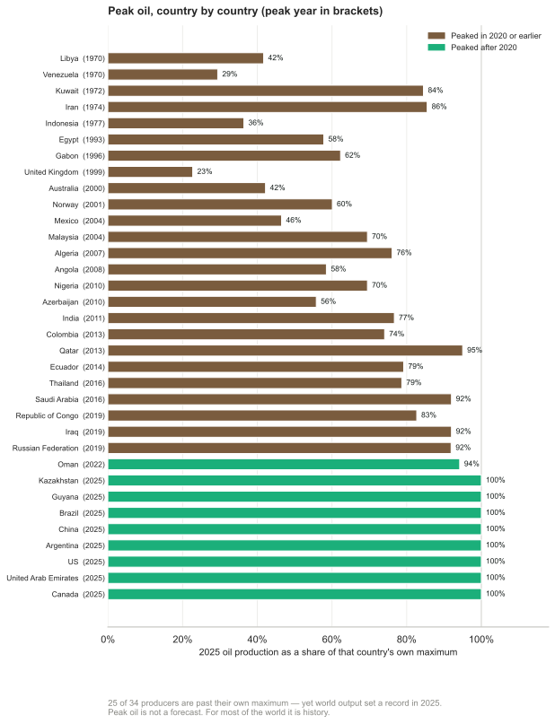

N Peak oil, peak gas, peak uranium
A chapter added in the 2026 revision. Chapter 23 redoes Jevons’ calculation for coal and finds that the answer is no longer interesting, because coal will be abandoned long before it is exhausted. This chapter does the same for the other three, and reaches a similar destination by a different road.
What the reserves actually say
M. King Hubbert proposed in 1956 that the production of a finite resource follows a curve which rises, peaks and declines, and that the peak can be predicted from the resource base. Applied to United States oil, the prediction was strikingly good. Applied to world oil it has been made, and missed, repeatedly for fifty years.
The simplest number is the reserves-to-production ratio: proved reserves divided by the current rate of extraction. Computed at 2025 rates from the Energy Institute’s figures:
| Resource | Proved reserves | Annual production | R/P at current rates |
|---|---|---|---|
| Oil | 1 732 thousand million barrels | 100.6 million barrels/day | 47 years |
| Gas | 188.1 trillion m3 | 4 186 billion m3 | 45 years |
| Coal | 1 074 Gt | 8.06 Gt | 133 years |
| Uranium | 5.93 Mt (below $130/kg) | ~67 000 t of demand | ~90 years |
Two warnings about that table, and they point in opposite directions.
R/P is not a countdown. It has hovered around forty to fifty years for oil for most of the last half-century, not because the estimate keeps being wrong but because “proved reserves” is an economic category rather than a geological one: it counts what is known, drilled and worth extracting at present prices. Higher prices and better technology convert resource into reserve, which is why the ratio keeps regenerating. The Energy Institute currently notes that its own reserves methodology is under review, and the figures above are still those assessed at end-2020.
But regeneration is not free, and chapter M is where the cost shows. Each conversion of resource into reserve tends to bring in something harder to get: deeper water, tighter rock, poorer grade. The barrels do not run out; the cheap barrels do, and the EROI of the marginal barrel falls. That is the honest form of the peak-oil intuition, and it survives even though the specific date predictions did not.
Uranium, which is a different case
Uranium deserves separate treatment because the resource question is genuinely open in a way oil’s is not, and because the arithmetic is unusually sensitive to what one assumes about reactors.
World production reached 60 213 tonnes of uranium in 2024, covering about 90% of reactor requirements — the balance coming from stockpiles and from reprocessed material. Identified resources recoverable below $130/kg stand at 5.93 million tonnes, rising to 7.94 million tonnes if one accepts $260/kg. At present consumption that is roughly ninety years, which is a short number for an industry that plans in half-centuries.
Three considerations pull it in different directions.
The resource figures are investment documents. The OECD Nuclear Energy Agency’s Red Book, which is the source everyone uses, reports resources by extraction cost and is aimed at least as much at investors as at scientists. Its categories descend from Reasonably Assured Resources through two grades of Estimated Additional Resources to Speculative Resources, and the totals move for administrative reasons — the estimate of one category fell by more than half in 2013 because the United States stopped reporting it.1 A ninety-year figure derived from such a series should not be read as a measurement of what is in the ground.
Price changes the answer enormously. Uranium is a small fraction of the cost of nuclear electricity, perhaps a few per cent, so the fuel price can rise several-fold without making the electricity notably dearer. That is not true of oil, and it means the uranium resource base is far more elastic than the oil one. At the extreme, seawater contains about 3 parts per billion, which amounts to something like 4.5 billion tonnes; extraction has been demonstrated with adsorbent fabrics and the capacity of those materials has improved severalfold since 2011, though the cost remains far above mining.
And breeding changes it beyond recognition. A fast breeder converts U-238, which is 99.3% of natural uranium and useless in a conventional reactor, into fissile plutonium. Doing so extracts perhaps fifty times more energy from the same ore, which turns ninety years into millennia and makes the resource question moot. The catch is that breeders have been fifteen years away for sixty years: the programmes have been dogged by cost, delay, sodium fires and closure. Thorium offers a comparable escape by a different route, with comparable uncertainty about delivery.
So the honest position on uranium is that the resource is adequate for the current fleet for about as long as anyone is planning, that it is inadequate for a very large expansion of conventional reactors on present resource estimates, and that both of those statements are dwarfed by the question of whether breeding ever works at scale.
Forecasts, and what happened to them
Uranium is unusually good ground for testing the peak method, because two quantitative forecasts were made with dates and error bars and both can now be checked.
The IAEA’s, from 2001. Analysis of Uranium Supply to 2050 projected that secondary supplies — military stockpiles, reprocessed material, inventory — which met about 42% of demand in 2000, would dwindle to a few per cent, and that mined production would therefore have to rise to cover 86 to 92% of demand by 2025. In 2024 mining covered 90%. A twenty-four-year-ahead projection landing inside its own range is a better result than this literature usually manages, and it is worth recording that the institutional forecast was the accurate one.
Michael Dittmar’s, from 2013. “The end of cheap uranium” applied a depletion model — that only 50–70% of a deposit is ever recovered, and that modern mines work a deposit out in about ten years — to every operating and planned mine. It predicted a global peak of at most 58 ± 4 kt around 2015, a decline of at least 0.5 kt a year thereafter, at most 54 ± 5 kt by 2025 and 41 ± 5 kt by 2030. Since demand was then about 68 kt, the paper concluded that shortages were unavoidable, recommended a worldwide nuclear phase-out, and warned that failing to organise one would bring “brownouts, blackouts, and worse”.2
Here is what production actually did:
| Year | 2015 | 2016 | 2017 | 2018 | 2019 | 2020 | 2021 | 2022 | 2023 | 2024 |
|---|---|---|---|---|---|---|---|---|---|---|
| kt U | 60.3 | 63.2 | 60.5 | 54.2 | 54.7 | 47.7 | 47.8 | 49.6 | 54.4 | 60.2 |
He got the timing of the peak right: 2016, near enough to “around 2015”. He got the direction right too — production fell by a quarter over the following four years. And then it recovered by 26% and is now above the maximum he allowed for 2025.
The reason he was wrong is the interesting part. The fall from 2016 to 2020 was not depletion. It was Kazatomprom and Cameco deliberately curtailing output because the post-Fukushima price collapse had made mining unprofitable — supply discipline, of the kind any commodity producer practises. When prices recovered, so did production, from mines his model had written off. A depletion model has no term for a company choosing to mine less this year and more later, and so it fitted an economic cycle and mistook it for geology.
The catastrophe did not arrive either. The gap he identified was real — mining covered only 74% of requirements in 2020 — but it was bridged by exactly the secondary supplies the IAEA had been tracking, rather than by blackouts.
This is the same lesson as chapter 23’s, arrived at from the other direction. Predicting when a resource peaks means predicting the behaviour of the people who own it, and that is a harder problem than estimating what is in the ground. Both papers did competent arithmetic. The one that was right about the numbers was the one that modelled the market rather than the rock.
The same mistake was available on oil, and was made. In October 2021 the Swedish blog Cornucopia? asked whether peak oil had already happened in 2018 or 2019. The evidence was a monthly all-liquids series from the American EIA: a high of 102.4 mb/d in October 2018, an almost identical 102.0 in November 2019, and no recovery to either level in the two years since. A French report was cited as also placing the peak in 2019. The conclusion drawn was a permanent energy and economic crisis — growth stalls without rising energy use, prices turn volatile, poor countries suffer first, and Sweden must choose between a large nuclear build and a managed decline.3
Here is what production and consumption actually did:
| Million barrels per day | 2018 | 2019 | 2020 | 2021 | 2024 | 2025 |
|---|---|---|---|---|---|---|
| Oil production | 95.0 | 95.1 | 88.9 | 90.3 | 97.2 | 100.6 |
| Total liquids consumption | 101.0 | 101.4 | 92.4 | 97.8 | 105.1 | 106.5 |
The two rows are on different bases, and the difference matters for the test. The EIA all-liquids series the blog used includes biofuels and refinery processing gain, which the Energy Institute’s “oil production” line excludes; total liquids consumption is the comparable measure. On that measure, the 2025 annual average of 106.5 exceeds the blog’s monthly high-water mark by four million barrels a day, and 2024 had already passed it. On the narrower production basis, 2025 stands 5.5 mb/d above 2019.
The reason is again the interesting part, and it is the same reason. The trough the argument rested on was the pandemic together with the OPEC+ agreement of April 2020 to withdraw 9.7 mb/d — the largest production cut ever agreed. The piece was written in October 2021 while those cuts were still being unwound on a published schedule. A cartel restoring barrels it had voluntarily withheld looks, in the monthly data, exactly like a resource failing to recover. Dittmar mistook Kazatomprom and Cameco for geology; this mistook OPEC+ for geology.
Two qualifications are owed. The piece hedged explicitly, allowing that it might be wrong, and it is a blog essay rather than a study. But the failure mode is worth naming because it is directional: both of the forecasts that missed were pessimistic about supply, and neither anticipated that within five years the binding constraint would be who controls a strait rather than what is left in the rock. That is the subject of the rest of this chapter.
Most of the world has already peaked
The argument so far has treated peak oil as a question about the future. For most of the world it is not. It is a matter of record, and the record is worth putting on the page, because it is both stronger evidence for the peak idea than anything its advocates usually cite and the reason the global forecast keeps failing.
Take every country the Energy Institute tracks, find the year each produced most oil, and ask what it produces now as a share of that maximum. Twenty-five of the thirty-four significant producers are past their own peak.4

Figure N.1. Peak oil, country by country. Each bar is 2025 production as a share of that country’s own record year, shown in brackets. Energy Institute Statistical Review of World Energy 2026.
Some of these are not gentle declines. Venezuela peaked in 1970 and produces 29% of what it did then. The United Kingdom peaked in 1999 and produces 23% — a three-quarters decline inside a working lifetime, in a wealthy country with full access to capital and technology. Indonesia peaked in 1977 at 36%, Libya in 1970 at 42%, Mexico in 2004 at 46%, Norway in 2001 at 60%. Kuwait peaked in 1972, Iran in 1974.
Gas tells the same story more quietly: 25 of 44 producers are past peak, and the Netherlands, whose Groningen field defined European gas, is at 9% of its 1977 maximum.
This is the part of the peak-oil case that was simply correct, and the popular statements of it were more careful than they are usually given credit for. A Swedish summary from 2012 put the central claim as “the majority of all countries that have ever produced oil have peaked, and ever fewer countries account for an ever larger share of oil production” — which is what the chart above shows, fourteen years on. It worked through sixteen charted cases — Indonesia, Mexico, Argentina, Ecuador, Venezuela, Denmark, Norway, Iraq, Kuwait, Algeria, Libya, Nigeria, Australia, Brunei, Malaysia and New Zealand — arguing in each that rising prices had failed to lift production back to its former level.5
Two features of that piece are worth recording, because they are what an argument made honestly looks like. It charted Iraq but set it aside explicitly as not an example of natural peak oil, the decline there being war rather than geology. And it allowed in advance that “it is not certain that all the examples below have peaked permanently”, since a country may reach an earlier top again.
So why does the world total keep setting records?
Because peaks are not synchronised, and a handful of new provinces have more than covered the losses. Eight producers reached their maximum in 2025 itself: the United States, Canada, China, the United Arab Emirates, Brazil, Kazakhstan, Argentina and Guyana. Guyana produced no oil at all a decade ago and now produces 716 000 barrels a day.
Argentina is the instructive one, and precisely the case that 2012 caveat left room for. It was declining when the piece was written. Vaca Muerta shale reversed it, and Argentina’s 2025 output is its highest ever. A country can come back off its peak if the rock beneath it turns out to hold a second, different resource that a new technique can reach.
That is the mechanism the depletion models keep missing, and it is the same one chapter 23’s argument turns on. The world is not one oil field. It is a portfolio, and the portfolio has been rebalanced twice in twenty years — once by American shale, once by the Atlantic pre-salt and Guyana. Each time, the aggregate curve stayed flat or rose while three-quarters of its constituents fell.
The peak arrived as a price, not as a shortage
If the good rock is being used up, the effect should show somewhere even when volumes hold. It shows in what a barrel costs to get out.
The average breakeven for a new non-OPEC project is now about $47 (£37) a barrel of Brent, up 5% in a single year. American shale, the resource that broke the last two peak forecasts, breaks even near $70 WTI today and is projected toward $95 by the mid-2030s — not because anything is running out in the absolute sense, but because the Permian’s best acreage is drilled first and the Eagle Ford and Bakken are already working through their core inventory. Onshore Middle East production remains far cheaper, which is precisely why the marginal barrel migrates back toward the countries that hold it.6
That is the honest form of the peak-oil claim, and it is worth stating plainly because it is neither the catastrophe its advocates predicted nor the non-event its critics claimed. Geology did not stop supply. It raised the price of the marginal barrel, and it moved the ownership of the cheap ones. The first of those is a tax on everyone. The second is the subject of the rest of this chapter.
Exports fall faster than production
There is a piece of arithmetic that changes the shape of every number above, and it is not in the reserves tables because it is not about geology.
An exporting country consumes some of what it produces. When its production begins to decline, its domestic consumption usually does not — it is a country getting richer, buying cars. Exports are the difference between two quantities moving in opposite directions, and a difference declines much faster than either term.
Jeffrey Brown set this out as the Export Land Model. Take a country at its production peak that consumes half of what it produces, then let production fall 5% a year while domestic consumption rises 2.5% a year. Its exports do not decline by 5% a year. They reach zero in nine years.
Indonesia did it faster. From its 1997 peak, production fell 3.9% a year — gentler than the model — while domestic consumption grew 4.1%. Net exports reached zero in seven years, and a founding member of OPEC became an oil importer.
The consequence for an importing country like Britain is that the reserves-to-production ratios in the first table are the wrong numbers to be reassured by. What reaches the market is not world production but world net exports, and that quantity can be falling while production is flat. Brown and Foucher argued that global net exports had already peaked in 2006, which is a much sharper claim than peak production and rather harder to dismiss.
The same argument does not transfer cleanly to uranium, and it is worth saying why. Kazakhstan does not consume its own uranium in any quantity; there is no domestic-demand term to eat the exports. Uranium’s version of the problem is political rather than arithmetical, and that is the subject of the next section.
The constraint that actually binds
Which brings us to the thing this chapter exists to say, and it is not about geology.
Uranium mining is extraordinarily concentrated. Of the 60 213 tonnes produced in 2024:
| Country | Tonnes U | Share |
|---|---|---|
| Kazakhstan | 23 270 | 39% |
| Canada | 14 309 | 24% |
| Namibia | 7 333 | 12% |
| Australia | 4 598 | 8% |
| Uzbekistan | 4 000 | 7% |
| Russia | 2 738 | 5% |
| Niger | 962 | 2% |
Three countries supply about three-quarters of it. Kazakhstan alone supplies more than a third, and Kazakhstan, Uzbekistan and Russia together supply over half. Kazakh production is substantially owned or part-owned through Russian and Chinese joint ventures, and much of it has historically moved to market through Russian territory and Russian ports.
Set that beside chapter L’s finding that China refines over 90% of the world’s graphite and rare earths, and chapter 15’s that six Chinese firms make 69% of the world’s batteries, and a pattern emerges that MacKay’s method is structurally blind to. His question is whether the physics permits a thing. These chapters keep arriving at a different question: whether the supply chain for it runs through countries you would rather not depend on.
Nuclear power is often argued for on energy-security grounds — a fuel you can stockpile for years, unlike gas. That argument is sound and it is worth noticing that it is an argument about storage, not about sourcing. On sourcing, a British or European nuclear programme is more exposed to Central Asian politics than a gas plant is to Norwegian.
2026 supplied the demonstration
While this edition was being written, the argument stopped being hypothetical twice in one year.
In January 2026 a United States military operation removed Nicolás Maduro from Venezuela — a country sitting on some of the largest proved oil reserves in the world. The market barely moved, for the instructive reason that Venezuela had already ceased to matter as a supplier: production under a million barrels a day, exports around half a million, against world consumption above a hundred million. A country can hold enormous reserves and be irrelevant to supply.
In February 2026 the more serious case arrived, and it has not ended. United States and Israeli strikes on Iran on 28 February were followed on 2 March by the closure of the Strait of Hormuz, through which roughly a fifth of world oil trade passes. The International Energy Agency described it as the largest supply disruption in the history of the oil market.
It is still closed as this chapter is written, more than five months on. Iran declared the strait open on 17 April and the Revolutionary Guard reversed the announcement the following day. A memorandum of understanding on 17 June lifted the American naval blockade of Iranian ports — which is a different thing, and let Iran itself export some 40 million barrels — but the waterway has not returned to normal use. Roughly ten ships transited on 23 July, against about eighty-eight a day before the war, some of them running with their transponders off. An LNG carrier with Qatari cargo was struck by a cruise missile crossing the strait on 1 August.7
Note what the numbers did and did not do. A fifth of world oil trade stopped moving and the oil price rose by roughly a tenth at first, not by a multiple, because there was a glut to absorb it; it went above $100 later, once the ceasefire lapsed. Reserves in the ground did not change at all, and neither did any reserves-to-production ratio. What changed was whether a ship could sail through a strait.
The cargoes nobody counts
Oil dominates the reporting, and it is not where the sharpest losses fell. Two other things go through Hormuz in concentrations that make the oil share look comfortable.
Helium. Qatar supplies about a third of the world’s helium, as a by-product of its gas processing at Ras Laffan — facilities damaged in the strikes. The distributor Airgas declared force majeure and restricted customers to half their contracted volumes. South Korea, which took nearly two-thirds of its helium from Qatar, has no domestic alternative. Helium is not an energy carrier and gets no chapter in this book, but semiconductor fabrication, MRI scanners and cryogenics do not have a substitute for it at any price.
Fertiliser. Up to 30% of internationally traded fertiliser — around 16 million tonnes a year of nitrogen, phosphate and sulphur products — moves through the strait. The Gulf supplies 30–35% of world urea exports and 20–30% of ammonia; Qatar’s QAFCO complex alone is about 14% of global urea trade.
That second one belongs in this book more than the oil does, and chapter 13 explains why. Nitrogen fertiliser is essentially natural gas turned into food by the Haber–Bosch process: it is an energy carrier wearing a different label, and the world’s ability to feed itself runs through it. A disruption that takes a tenth off the oil price and a third off the traded fertiliser supply has done far more damage through the second channel, and it will show up as a harvest rather than as a pump price.
Who is preparing for it
The two largest economies have drawn opposite conclusions, and their inventories say so plainly.
The United States holds its Strategic Petroleum Reserve at about 316 million barrels against an authorised capacity of 714 million — the lowest level since 1983, after some 352 million barrels were withdrawn over four years, including a 172-million-barrel release authorised in March 2026 during the Iran war.
China now holds the largest emergency stocks in the world: total crude inventories estimated near 1.3 billion barrels, of which perhaps 400–500 million is the strategic reserve proper, and it is still building — at least 169 million barrels of new capacity across eleven sites, with a stated intention to take state reserves past a billion barrels, framed explicitly as three months of net import cover.
So one country has spent its buffer and the other has been accumulating one. Whatever else that is, it is a judgement about the next twenty years being made in physical barrels rather than in forecasts, and it is the clearest available evidence of what large states actually expect. MacKay’s arithmetic can tell you how much energy a country needs. It cannot tell you that China has been quietly buying three months of insurance while America sold its own.
There is a third response, and it is the only structural one. Stockpiles buy months. The alternative is to need less of the stuff, and the region most exposed to Hormuz is the one moving fastest. Asia holds 54% of the world’s population and 2% of its oil reserves and 8% of its gas; it imported about $1.1 trillion of fossil fuel in 2024 — $699bn of oil, $184bn of coal, $176bn of gas — at over 3% of regional GDP. For Thailand the bill is near 7.5% of GDP, and for Taiwan, South Korea, Singapore, Viet Nam, Pakistan and the Philippines it is between four and six.
The trajectory is the part that matters. Southeast Asia was a net oil and gas exporter in 1990, at about 75% of its own demand in surplus, and by 2023 was importing 30%. Greater China went from roughly 40% import-dependent to 72% over the same period, South Asia from 55% to 75%, and Northeast Asia has been at essentially 100% throughout. Growth was bought with imports.
So the electrification is not principally a climate policy, and reading it as one misses what it is for. By 2023, 84% of Asia had overtaken the United States on the share of final energy delivered as electricity, and by 2025, 77% was ahead of it on electric share of new car sales — Nepal above 60%, China above 50%. Nepal is the case that shows the mechanism cleanly: no oil of its own, a great deal of water, and the highest electric share in Asia. Electrifying transport is import substitution that happens to reduce emissions.8
The shape of the answer
Put the four resources together and the same conclusion emerges as in chapter 23. There is enough of all of them for the period anyone is planning over. Oil and gas have about half a century of proved reserves and have had about half a century for decades; coal has more than a century; uranium has roughly ninety years, or effectively unlimited if breeders ever work.
None of them will be exhausted. Each will instead be abandoned, priced out, restricted, or — the possibility this chapter adds — become unavailable for reasons that have nothing to do with what is in the ground.
That last is the one worth carrying away, because it is the one this book’s method is least equipped to see. A resource table answers how much is left. The Export Land Model answers how much of it reaches the market, which is a smaller and faster-moving quantity. Hormuz answers whether it can physically get here this month. And the strategic reserves answer the question underneath all of them: whether you have the money, the ships and the storage to be the customer who gets served.
The honest summary is the one in the question this chapter was asked to address. It is not only what is left. It is who has it, and whether they will sell it to us — and the answer to that is probably yes, at a price, until the week it is no.
Running out was the wrong thing to worry about. It was, however, a very good way of getting people to think about the numbers, which is what this book is for.
The Red Book categories and the reporting discontinuities are set out in Dylan Bedford, “Peak Uranium and the Sustainability of Nuclear Energy”, Physics 241 coursework, Stanford University, 2018: http://large.stanford.edu/courses/2017/ph241/bedford1/. This is student coursework rather than peer-reviewed work and is cited here for its clear summary of the Red Book’s structure and caveats, not as an authority on resource estimates. Production and resource figures above are from the World Nuclear Association’s compilations of Red Book and company data; oil, gas and coal reserves and production are from the Energy Institute’s Statistical Review of World Energy 2026, with reserves as assessed at end-2020 and R/P ratios recomputed here at 2025 production rates.↩︎
Michael Dittmar, “The end of cheap uranium”, Science of the Total Environment 461–462 (2013) 792–798, https://doi.org/10.1016/j.scitotenv.2013.04.035. The IAEA projection is Analysis of Uranium Supply to 2050, IAEA, 2001. Production figures are the World Nuclear Association’s compilation: 60 342 t (2015), 63 207 (2016), 60 462 (2017), 54 154 (2018), 54 742 (2019), 47 731 (2020), 47 805 (2021), 49 614 (2022), 54 433 (2023), 60 213 (2024). Mining covered 74% of reactor requirements in 2020 and 90% in 2024.↩︎
Lars Wilderäng, “Inträffade peak oil 2018 eller 2019 och vad innebär det?”, Cornucopia?, October 2021: https://cornucopia.se/2021/10/intraffade-peak-oil-2018-eller-2019-och/. As with the latitude argument cited in chapter L, this is a blog essay arguing a position rather than a study, and is examined here as a well-documented instance of the reasoning rather than as evidence for it. The monthly all-liquids highs quoted are the EIA’s. Production and consumption figures in the table are from the Energy Institute’s Statistical Review of World Energy 2026: world oil production 95 001, 95 127, 88 943, 90 315, 97 156 and 100 590 thousand barrels daily for 2018, 2019, 2020, 2021, 2024 and 2025, and total world liquids consumption 101 022, 101 388, 92 369, 97 814, 105 133 and 106 519 for the same years. The Review notes that differences between world consumption and world production statistics are accounted for by stock changes and by consumption of non-petroleum additives and substitute fuels. The April 2020 OPEC+ cut of 9.7 mb/d is from the OPEC secretariat’s communiqué of 12 April 2020.↩︎
Computed from the Energy Institute’s Statistical Review of World Energy 2026 by the
chapterNstep in this edition’s data-refresh script: for each producer, the year of maximum output over the full record (oil from 1965, gas from 1970) and 2025 output as a share of it. Aggregates and regional groupings are excluded, as are producers below 200 thousand barrels a day of oil or 5 bcm of gas in 2025, which leaves 34 oil producers and 44 gas producers. Two caveats. A country counts as “past peak” here if its maximum fell in 2020 or earlier, so a producer whose record year was 2021–2023 is not counted either way; and a single year’s output can be depressed by war, sanctions or quota rather than by geology — Venezuela, Libya and Iran are all cases where politics, not rock, explains much of the decline. The measure shows what has happened, not why.↩︎Lars Wilderäng, “Peak oil 101”, Cornucopia?, March 2012: https://cornucopia.se/2012/03/peak-oil-101-for-moderated/. Quotations are translated from the Swedish. As with the other citations to this blog in chapters L and N, it is an essay arguing a position rather than a study; it is used here because it stated a checkable claim and charted sixteen named cases, which is more than most statements of the argument do. The sixteen are read from the article’s own charts; Mexico, Australia, Brunei, Malaysia and New Zealand are charted without an accompanying sentence. Note that its peak years are not always the Energy Institute’s: it dates Nigeria to 2005 and Kuwait and Libya to 2008, where the full record used in figure N.1 gives 2010, 1972 and 1970 respectively — the piece is generally reading a recent window of crude production rather than an all-time maximum, so the two agree on direction and differ on dates. Its wider prediction, that rising prices would fail to bring on new supply, was wrong in aggregate: American shale and the Guyana–Brazil offshore arrived within the decade, and the text above says so.↩︎
Rystad Energy’s upstream cost analysis puts the average breakeven of a new non-OPEC oil project at about $47 per barrel of Brent, a 5% rise in a year, with North American shale averaging around $45 and onshore Middle East well below both. Enverus Intelligence Research projects US shale breakevens rising from roughly $70 per barrel WTI in 2025 toward $95 by the mid-2030s as core Permian, Eagle Ford and Bakken acreage is consumed. These are commercial estimates on differing bases — breakeven is sensitive to whether it includes full-cycle or half-cycle costs, and to the assumed hurdle rate — so the direction is more reliable than any single figure.↩︎
The Venezuela intervention of January 2026; the strikes on Iran of 28 February 2026 and the closure of the Strait of Hormuz from 2 March, with the IEA’s characterisation of it as the largest supply disruption in the history of the oil market. The strait remained closed to normal commercial traffic at the beginning of August 2026: about ten transits on 23 July against a pre-war norm near eighty-eight a day, and an LNG carrier struck by a cruise missile on 1 August. The memorandum of understanding of 17 June ended the American naval blockade of Iranian ports, which is distinct from the strait reopening. Helium: Qatar about a third of world supply, damage at Ras Laffan, Airgas force majeure at 50% of contracted volumes, South Korea sourcing 64.7% of its helium from Qatar in 2025. Fertiliser: Rystad Energy and WTO trade analyses put up to 30% of traded fertiliser products, some 16 Mt/year, through the strait, with the Gulf at 30–35% of urea exports and QAFCO alone about 14% of global urea trade. Strategic reserve figures: US Department of Energy and EIA for the SPR, including the 172-million-barrel release authorised in March 2026; Chinese inventory estimates are third-party and EIA-derived, since China does not publish strategic reserve volumes, and the split between strategic and commercial stocks is uncertain. These are recent and contested events and the figures should be expected to move.↩︎
Figures are from Ember’s Electric Asia: How Asia is leading the electric age, 11 June 2026, drawing on IEA, IRENA, UN Comtrade, World Bank and Ember’s own analysis. Coverage: 54% of world population against 2% of oil and 8% of gas reserves; fossil imports of about $1.1 trillion in 2024, made up of $699bn oil, $184bn coal and $176bn gas, at over 3% of the region’s GDP, with the per-country bill running from about 7.5% of GDP for Thailand through four to six per cent for Taiwan, South Korea, Singapore, Viet Nam, Pakistan and the Philippines, and Malaysia and Myanmar near zero because they export; net oil and gas imports as a share of demand moving between 1990 and 2023 from about −75% to +30% for Southeast Asia, 40% to 72% for Greater China and 55% to 75% for South Asia, with Northeast Asia near 100% throughout; the crossover at which Asia passed the West on electrification in 2016, at roughly a quarter of Western income per head, with Asian electrification since growing about five times faster; roughly 26% of final energy delivered as electricity against 21% in the West; 84% of Asia ahead of the United States on electrification in 2023 and 77% ahead on electric share of new car sales in 2025, with Nepal above 60% and China above 50%, and with Brunei and Malaysia among the economies named as having passed the United States on electrification; about three quarters of world electricity demand growth since 2000; some 60% of installed solar and wind, and manufacturing shares of over 95% of solar panels, 85% of batteries and 75% of wind turbines; and solar and wind resources sufficient for at least fourteen times regional energy demand. Four things to hold in mind about this source. Ember is an energy think-tank that advocates for electrification, and the deck is a campaigning document as well as an analytical one — the figures are sourced and checkable, the framing is not neutral, and the phrase “the Asian century” is theirs rather than this book’s. The 84% and 77% shares are given by Ember as “share of Asia”, and the deck does not state whether the denominator is population, countries or energy demand; they are quoted here as reported and should not be read as a headcount of countries. “Asia” excludes Russia, which is classed with Europe and Eurasia in the underlying IEA data; that matters because Russia is the clearest case of an exporter whose incentives run the opposite way. And the fourteen-times resource figure is a technical potential computed on land-use assumptions, not a forecast or an economic estimate — it belongs in the same category as MacKay’s own maximum-conceivable stacks, which he insisted were bounds rather than plans.↩︎